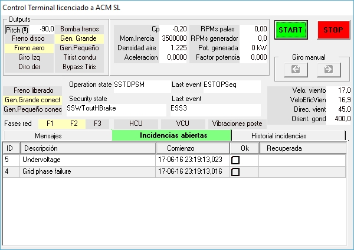

Ziel:Um zu verstehen, wie sich das System verhält, wenn eine Netzwerkphase verloren ist oder nicht.
Was zu beachten ist:Elektrische Alarme, Generator/Konverter-Status und Übergang zum sicheren Modus.
Was ist zu beachten:Endstatus, Alarmart und Bedingungen, die zur Rückstellung erforderlich sind.
RECHT Reduzieren Sie den Ausfall der elektrischen Schutzmechanismen.
In dieser praktischen Sitzung soll die Reaktion des Controllers auf einen Netzfehler beobachtet werden.
Sehen Sie die "Elektrischer Schrank"Diagramm.

Die drei Kontrollkästchen unter "Thyristor Bypass" ermöglichen es Ihnen, jede der drei Phasen des Netzes zu öffnen/ zu schließen.
Die Windenergieanlage in die Produktion stellen (sieheEinstellung der Bedingungen für den Einstieg in die Produktion mit niedrigem Wind).
Ändern Sie den Status eines dieser drei Kontrollkästchen und beobachten Sie, dass der Controller mit einer Verzögerung von wenigen Sekunden einen Prozess einleitet, um den Generator vom Netzwerk zu trennen (Ausschnitt).
Vorfällein Verbindung mit diesem Protokoll erscheint in der "Terminal Control"-Synoptik. Siehe folgende Abbildung.

Wenn die Phase wiederhergestellt wird, die Daten in der "Aufgedeckt" Spalte wird eingefüllt. Diese Vorfälle müssen vom Betreiber manuell "aufgeklärt" werden.